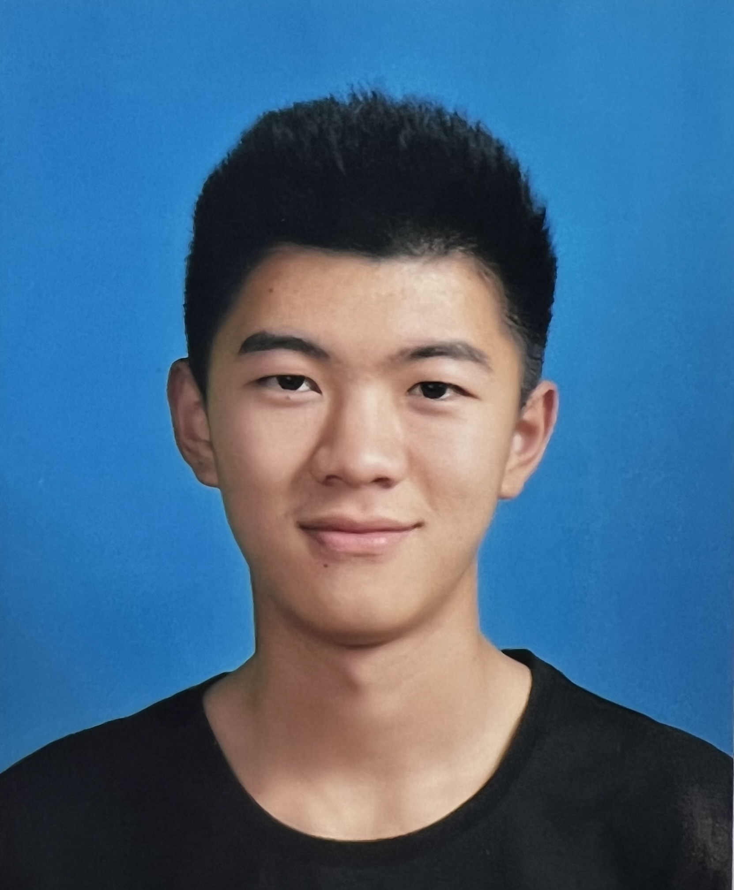
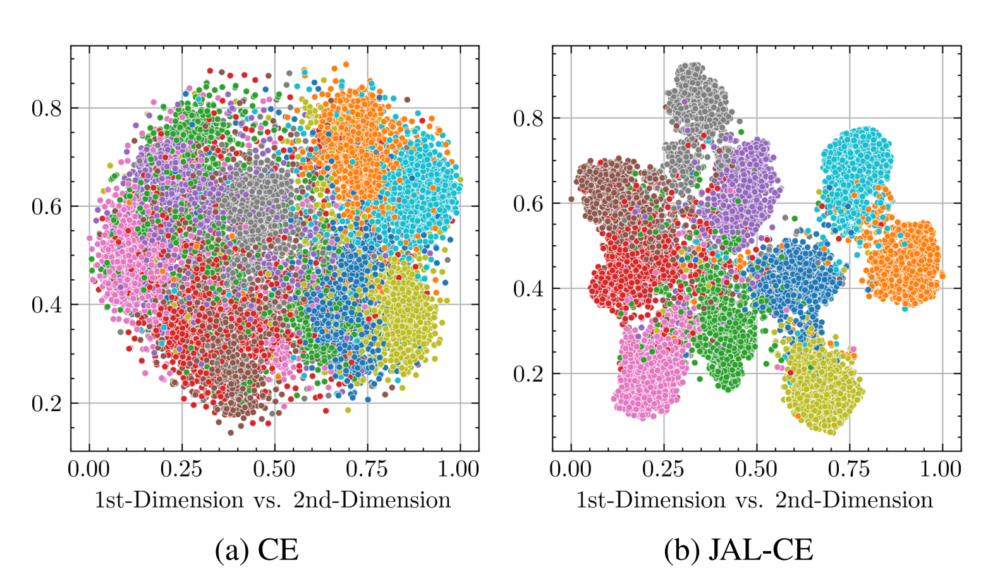
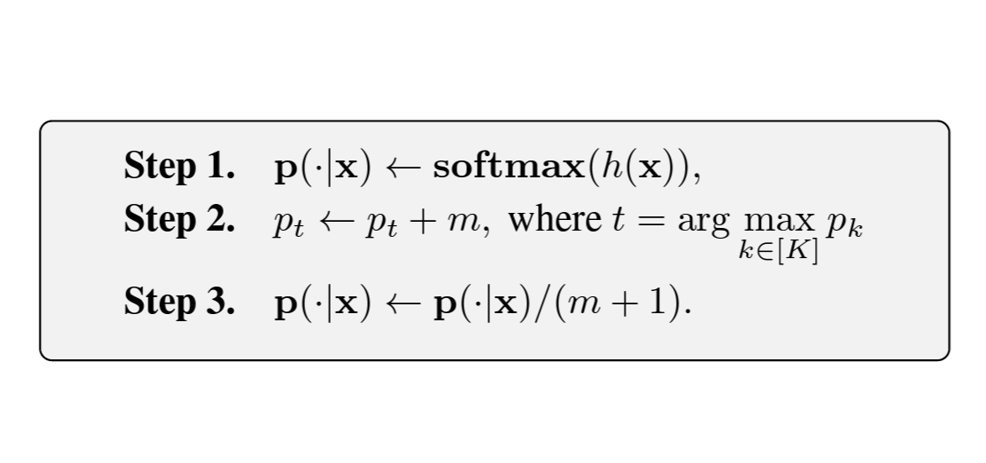
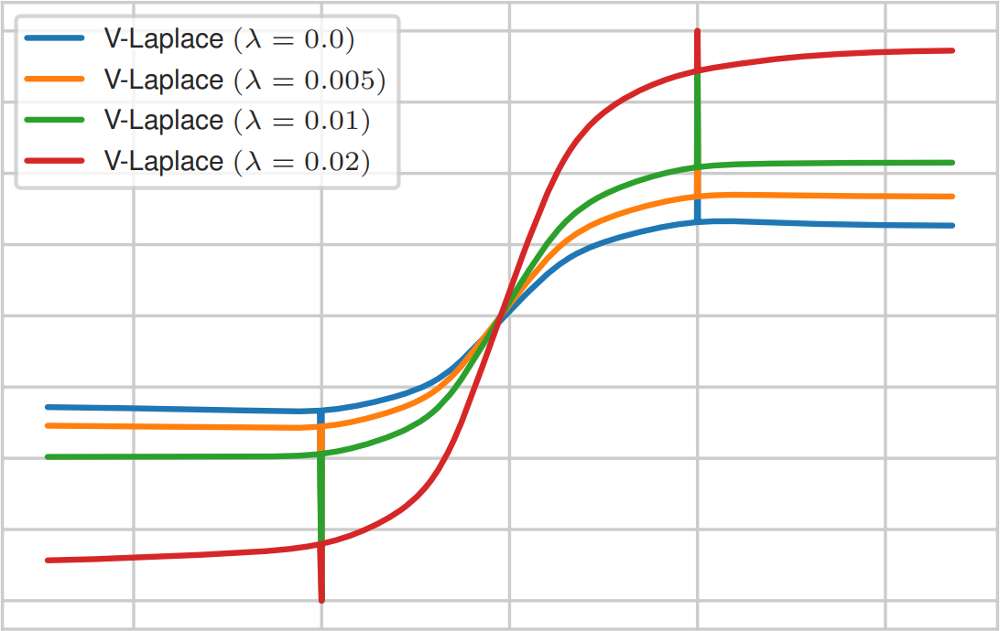

|  |
Jialiang Wang 王嘉良Ph.D. student
Harbin Institute of Technology
Email: cswjl@stu.hit.edu.cn |
Hi! I am a joint Ph.D. student at Harbin Institute of Technology (HIT) and City University of Hong Kong (CityUHK), advised by Prof. Xianming Liu and Asst. Prof. Haoliang Li. I received my B.Eng. from Dalian University of Technology in 2023.
My research interest is trustworthy machine learning, especially learning with imperfect data.
|
City University of Hong Kong |
|
|
Harbin Institute of Technology |
|
|
Dalian University of Technology |
|  |
Joint Asymmetric Loss for Learning with Noisy Labels Jialiang Wang, Xianming Liu, Xiong Zhou, Gangfeng Hu, Deming Zhai, JunJun Jiang, Xiangyang Ji International Conference on Computer Vision (ICCV 2025) |
|  |
\(\epsilon\)-Softmax: Approximating One-Hot Vectors for Mitigating Label Noise Jialiang Wang*, Xiong Zhou*, Deming Zhai, Junjun Jiang, Xiangyang Ji, Xianming Liu Annual Conference on Neural Information Processing Systems (NeurIPS 2024) |
|  |
Xiong Zhou, Xianming Liu, Hao Yu, Jialiang Wang, Zeke Xie, Junjun Jiang, Xiangyang Ji International Conference on Learning Representations (ICLR 2024) |
Last update: Aug. 2025/7